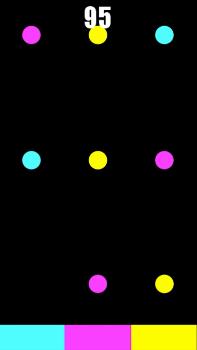

My Work:
On this page you'll find all sorts of projects I've worked on.
SynthEco
Developing SynthEco, a Python framework for creating Synthetic Ecosystems.
I work with a team of researchers at the Pittsburgh Supercomputing Center. My work involves interacting with the US Census API to retrieve relevant population data to be used in generating a synthetic population via Iterative Proportional Fitting.
FRED
Working on the development of FRED, A Framework for Reconstructing Epidemiological Dynamics, which is an agent-based modeling framework developed by the University of Pittsburgh Public Health Dynamics Laboratory in collaboration with the Pittsburgh Supercomputing Center and the Carnegie Mellon University School of Computer Science.
Distributed File System
A school project in which we programmed a disk driver from scratch using C to manage a distrubted file system.
I was tasked with engineering the software implementation of low level functions such as read and write, optimizing the file system by implementing a LRU write-through cache, and extending the device driver to connect to a server controller through networking.
Blender Doughnut
My Blender Doughnut created as part of the popular Blender tutorial series by Blender Guru.
Orblitz
The final project I created for DART205 - Creative Coding. It's an endless arcade style game where you must match the falling orbs with the paddles you see along the bottom of the screen. The game was made with mobile controls in mind, and have plans to one day release it as a full mobile game.
Choose Life
The final project I created for DART204 - Animation. It was an abstract animation created using Illustrator and After Effects.
Contact me